| Overview | ||||||||||||||||||||||||||||||||||||||||||||||||||||||||||||||||||||||||||||||||||||||||||||||||||
|---|---|---|---|---|---|---|---|---|---|---|---|---|---|---|---|---|---|---|---|---|---|---|---|---|---|---|---|---|---|---|---|---|---|---|---|---|---|---|---|---|---|---|---|---|---|---|---|---|---|---|---|---|---|---|---|---|---|---|---|---|---|---|---|---|---|---|---|---|---|---|---|---|---|---|---|---|---|---|---|---|---|---|---|---|---|---|---|---|---|---|---|---|---|---|---|---|---|---|
| A game of Mahjong is played in multiple rounds, with each round consisting of several hands. The overall goal of the game is to score the most points; the goal of each hand is to form a winning hand of tiles before anyone else does. Most winning hands will consist of four melds (chows, pungs, or kongs) and one matched pair of tiles, but how many points a winning hand is worth depends on what's in it and how it was built. These rules are based on one particular version of Hong Kong Old Style Mahjong, but there are innumerable variants of the game, with different tiles, scoring rules, and even rules of play. Feel free to tweak these rules to make it more fun; just make sure everyone in the group agrees what rules you are playing with before you start! |
||||||||||||||||||||||||||||||||||||||||||||||||||||||||||||||||||||||||||||||||||||||||||||||||||
| Tile Types | |||
|---|---|---|---|
| 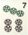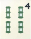 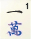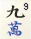 |
Suits — Circles, Bamboo, and Hanzi. The 1 and 9 of each suit are called the "terminals". |
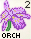 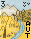 |
Bonuses — Seasons and Flowers Grants extra points if you collect the right ones. When drawn, play immediately and draw a replacement. |
| 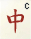 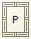 |
Dragons — Red, Green, and White All types of dragons are "honour tiles" and grant extra points. |
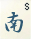 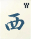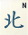 |
Winds — East, South, West, and North All winds are "honour tiles", but only the ones matching the round wind or your seat wind grant extra points. |
| Chow (three in a row) | |
|---|---|
| 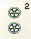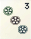 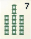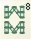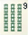 |
Closed: form in your hand using tiles from the wall. Open: form face-up by stealing the preceding player's discard and combining with two tiles in your hand. Formed from suits only, not honour tiles. Usually the lowest-scoring form of meld. |
| Pung (three of a kind) | |
|---|---|
| 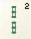 |
Closed: form in your hand using tiles from the wall. Open: form face-up by stealing any player's discard and combining with two tiles in your hand. Play continues to your right even if this skips someone. |
| Kong (four of a kind) | |
|---|---|
| Closed: form in your hand using tiles from the wall, then play partially face up. Open (Small): form face-up by adding a tile from the wall to a revealed pung. Open (Large): form face-up by stealing any player's discard and adding to a concealed pung. After playing, draw a replacement. Play continues to your right as with pung. |
|
| Play | |
|---|---|
| Your Turn | Draw a tile, then choose a tile to discard (or declare victory if you can). You always end your turn by discarding, whether you drew a tile from the wall or stole a tile from someone else. |
| Stealing | After someone discards, other players have a few seconds to steal that tile to complete a meld or a winning hand. If multiple players try to steal at once, winning beats kong, which beats pung, which beats chow. Note that you can always steal if that tile would give you a winning hand, even if it wouldn't complete a meld. |
| Replacements | After playing a bonus tile or a kong, draw a replacement tile from the back of the dead dead wall rather than the front of the live wall. |
| Dead Wall | The last 14 tiles of the wall (7 columns) are the "dead wall". It's always 14 tiles long no matter how many tiles you've drawn from it. |
| Out of Tiles | The hand ends in a 4-way tie if there are only 14 tiles (the dead wall) left on the table. |
| Winning | When drawing or stealing a tile gives you a winning hand (4 melds + 1 pair), reveal your hand and declare victory. You score points from the other players depending on the contents of the hand. |
| Next Hand | At the end of a hand (unless it was a tie), the East position moves to the player to the current East's right, and that player goes first. |
| Next Round | Once every player has been East, the round wind changes to South and the South player goes first. After that comes West, then North. |
| Game End | A game usually ends after 1-4 rounds (depending on how long a game people want). It also ends immediately if any player runs out of points completely. |
| Setup |
|---|
| (1) Choose a player to be East. Seat players counterclockwise E-S-W-N (reverse compass order). Decide on scoring rules. (2) Shuffle tiles and build four walls, each one 18 tiles wide and 2 high. Push them together into a square. (3) East rolls 3d6; count that many seats around the table. That player counts that many tiles from the edge of their wall and breaks the wall there. Players will draw tiles from the right side of the break. (4) Players draw two tiles at a time, starting with East, until everyone has 12 tiles; then one more tile each to make 13. (5) The round wind always starts at East, so the East player gets the first turn. |
| Between Hands |
|---|
| If a hand ends in a tie, just reshuffle the tiles, rebuild the walls, and play another hand. If someone won, but not everyone has been the first player yet this round, the seat winds change; the player after the current East becomes the new East (with the players after them being South, West, and North). If everyone has already been first player this round, the round wind changes instead, in the same order: East➞South➞West➞North. The player whose seat matches the new round wind goes first. |
| Scoring | |||||||||||||||||||||||||||
|---|---|---|---|---|---|---|---|---|---|---|---|---|---|---|---|---|---|---|---|---|---|---|---|---|---|---|---|
| Players start with 500 points. The overall winner is the one with the most points at the end of the game. Hands are scored in faan. Before playing, players should agree on a minimum number of faan to declare victory (usually 1-3) and a maximum faan per hand (usually 7 or 10; sometimes 13). When someone wins a hand, the other players give them points based on the faan-to-points table below. If they won by stealing a tile from someone, the person they stole it from pays double. If they won by drawing a tile, everyone pays double. |
|||||||||||||||||||||||||||
|
|||||||||||||||||||||||||||
| Score Table | ||||||||||||||||||||||||||||||||||||||||||||||||||||||||||||||||||||||||||||||||||||||||||||||||||
|---|---|---|---|---|---|---|---|---|---|---|---|---|---|---|---|---|---|---|---|---|---|---|---|---|---|---|---|---|---|---|---|---|---|---|---|---|---|---|---|---|---|---|---|---|---|---|---|---|---|---|---|---|---|---|---|---|---|---|---|---|---|---|---|---|---|---|---|---|---|---|---|---|---|---|---|---|---|---|---|---|---|---|---|---|---|---|---|---|---|---|---|---|---|---|---|---|---|---|
| Notes | 2 (1) means that bonus is worth 2 if closed, 1 if open. 2 (-) means you only get the bonus if the hand is closed. max means it automatically scores maximum faan. Anything that needs a pung, you can also use kongs for. | |||||||||||||||||||||||||||||||||||||||||||||||||||||||||||||||||||||||||||||||||||||||||||||||||
| Alternate Winning Hands | ||||||||||||||||||||||||||||||||||||||||||||||||||||||||||||||||||||||||||||||||||||||||||||||||||
| max | Thirteen Orphans | max | Nine Gates | |||||||||||||||||||||||||||||||||||||||||||||||||||||||||||||||||||||||||||||||||||||||||||||||
| max | Eight Treasures | 2 | Seven Pairs | |||||||||||||||||||||||||||||||||||||||||||||||||||||||||||||||||||||||||||||||||||||||||||||||
| Faan from Winning Move | ||||||||||||||||||||||||||||||||||||||||||||||||||||||||||||||||||||||||||||||||||||||||||||||||||
| max | Win with your first draw | 1 | Last draw from the wall | |||||||||||||||||||||||||||||||||||||||||||||||||||||||||||||||||||||||||||||||||||||||||||||||
| 1 | Steal the last discard | 1 | Any draw from the dead wall | |||||||||||||||||||||||||||||||||||||||||||||||||||||||||||||||||||||||||||||||||||||||||||||||
| 1 | Steal from a small kong | 1 (-) | Normal draw from the wall | |||||||||||||||||||||||||||||||||||||||||||||||||||||||||||||||||||||||||||||||||||||||||||||||
| Faan from Bonuses | ||||||||||||||||||||||||||||||||||||||||||||||||||||||||||||||||||||||||||||||||||||||||||||||||||
| 2 | All seasons | 1 | Per season or flower of your seat | |||||||||||||||||||||||||||||||||||||||||||||||||||||||||||||||||||||||||||||||||||||||||||||||
| 2 | All flowers | 1 | No bonus tiles at all | |||||||||||||||||||||||||||||||||||||||||||||||||||||||||||||||||||||||||||||||||||||||||||||||
| Faan from Suits | ||||||||||||||||||||||||||||||||||||||||||||||||||||||||||||||||||||||||||||||||||||||||||||||||||
| 6 (5) | Full Flush All one suit, no honours | 2 (1) | Pure Straight 1-9 of one suit | |||||||||||||||||||||||||||||||||||||||||||||||||||||||||||||||||||||||||||||||||||||||||||||||
| 3 (2) | Half Flush All one suit, some honours | 2 (1) | Three matching chow of different suits | |||||||||||||||||||||||||||||||||||||||||||||||||||||||||||||||||||||||||||||||||||||||||||||||
| 3 (-) | Two sets of two matching chow of one suit | 1 (-) | Two matching chow of one suit | |||||||||||||||||||||||||||||||||||||||||||||||||||||||||||||||||||||||||||||||||||||||||||||||
| Faan from Melds | ||||||||||||||||||||||||||||||||||||||||||||||||||||||||||||||||||||||||||||||||||||||||||||||||||
| max | Four kongs | 2 | Three kongs | |||||||||||||||||||||||||||||||||||||||||||||||||||||||||||||||||||||||||||||||||||||||||||||||
| max (2) | Four pungs | 2 | Three closed pungs | |||||||||||||||||||||||||||||||||||||||||||||||||||||||||||||||||||||||||||||||||||||||||||||||
| 2 | Three pungs with the same number | 2 | 2 pungs + 1 pair of dragons | |||||||||||||||||||||||||||||||||||||||||||||||||||||||||||||||||||||||||||||||||||||||||||||||
| Faan from Honours/Terminals | ||||||||||||||||||||||||||||||||||||||||||||||||||||||||||||||||||||||||||||||||||||||||||||||||||
| max | Three wind pungs + wind pair or pung | |||||||||||||||||||||||||||||||||||||||||||||||||||||||||||||||||||||||||||||||||||||||||||||||||
| max | Three dragon pungs | 2 | Two dragon pungs + dragon pair | |||||||||||||||||||||||||||||||||||||||||||||||||||||||||||||||||||||||||||||||||||||||||||||||
| max | Only honours | 1 | All Simples No honours or terminals | |||||||||||||||||||||||||||||||||||||||||||||||||||||||||||||||||||||||||||||||||||||||||||||||
| max | Only terminals | 1 | One dragon pung | |||||||||||||||||||||||||||||||||||||||||||||||||||||||||||||||||||||||||||||||||||||||||||||||
| 3 (2) | At least one terminal in each meld | 1 | Prevalent wind | |||||||||||||||||||||||||||||||||||||||||||||||||||||||||||||||||||||||||||||||||||||||||||||||
| 2 | Only terminals and honours | 1 | Seat wind | |||||||||||||||||||||||||||||||||||||||||||||||||||||||||||||||||||||||||||||||||||||||||||||||